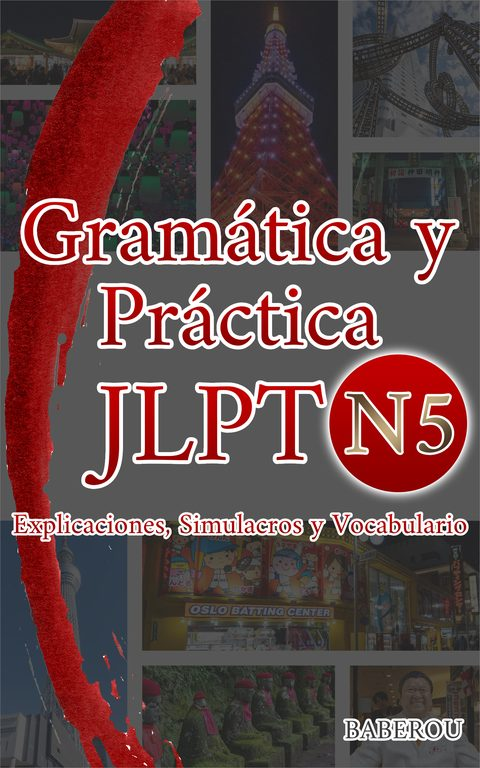
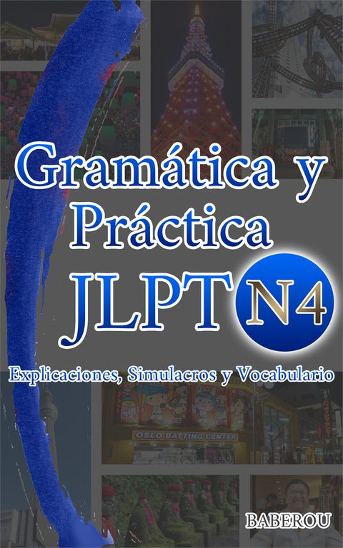
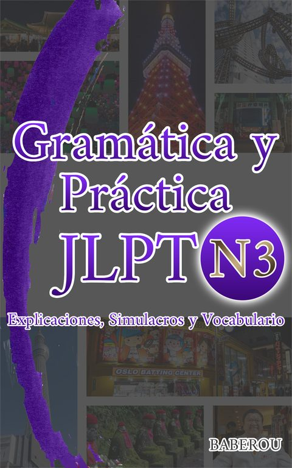
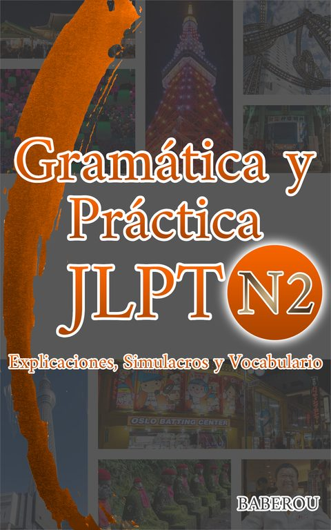
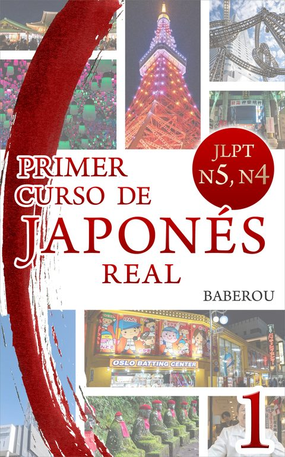
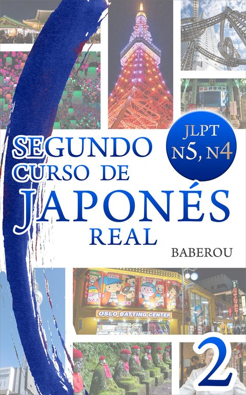
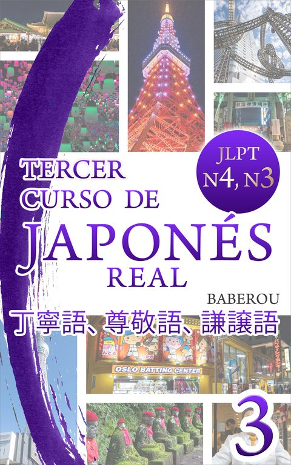
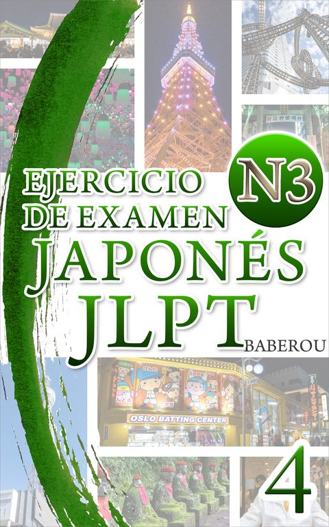
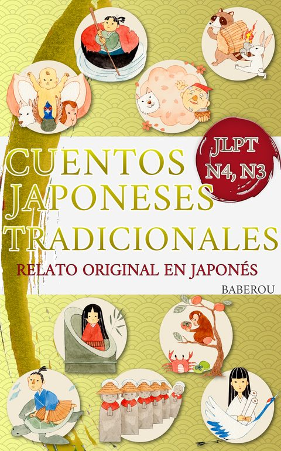
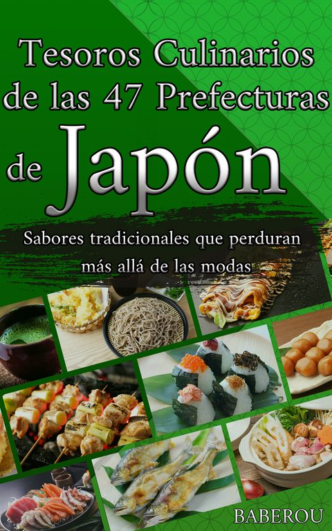

JLPT N5Explicaciones, simulacros y vocabulario para el nivel inicial.
Ver en AmazonPreguntas de práctica al estilo del examen real, con explicaciones bilingües japonés-español para cada respuesta. Elige tu nivel y empieza ahora mismo, sin registro.
El JLPT (Japanese-Language Proficiency Test) es el examen oficial de nivel de japonés, organizado por la Japan Foundation y JEES. Se divide en cinco niveles, de N5 (básico) a N1 (avanzado), y en la mayoría de los países se celebra dos veces al año, en julio y diciembre.
Cada nivel tiene una mini-prueba de gramática con corrección inmediata y explicación en japonés y español. ¿No estás seguro de cuál elegir? Haz este diagnóstico rápido de 8 preguntas →
Practica el significado y la lectura de palabras y kanji de cada nivel, con explicación en japonés y español.
Dos colecciones con objetivos distintos: una para practicar como en el examen real, y otra para aprender gramática paso a paso desde cero. Elige según lo que necesites ahora.
Para quien ya estudió y quiere entrenar con el formato real del examen.

JLPT N5Explicaciones, simulacros y vocabulario para el nivel inicial.
Ver en Amazon
JLPT N4Explicaciones, simulacros y vocabulario para el segundo nivel.
Ver en Amazon
JLPT N3Explicaciones, simulacros y vocabulario para el nivel intermedio.
Ver en Amazon
JLPT N2Explicaciones, simulacros y vocabulario para el nivel avanzado.
Ver en AmazonPara aprender gramática desde cero, con japonés real, no solo para el examen.

N5 · N4Japonés tal como se habla de verdad, para los primeros niveles.
Ver en Amazon
N5 · N4La continuación del japonés real, con más situaciones cotidianas.
Ver en Amazon
N4 · N3敬語, 尊敬語, 謙譲語, 丁寧語 — el lenguaje formal explicado con calma.
Ver en Amazon
JLPT N3Gramática y comprensión de lectura, práctica extra al estilo del examen.
Ver en AmazonCultura, lectura y viajes para tu aprendizaje del japonés.

N4 · N3Relato original en japonés para practicar lectura con historia.
Ver en Amazon
CulturaSabores tradicionales que perduran más allá de las modas.
Ver en AmazonTodo lo que necesitas saber para divertirte en tu viaje.
Ver en AmazonLa segunda parte de la guía de viaje a Japón.
Ver en AmazonEl nombre viene del yatagarasu (八咫烏), el cuervo de tres patas de la mitología japonesa que guio al primer emperador en su camino. Ese cuervo no caminaba la ruta por él — solo lo acompañaba, paso a paso, hasta donde necesitaba llegar. Karasu nace con la misma idea: un proyecto que no memoriza el examen por ti, pero te acompaña nivel a nivel, desde los primeros pasos (N5) hasta un nivel avanzado (N2), con explicaciones claras y ejemplos basados en situaciones reales.
Los libros de esta primera etapa de Karasu se publican bajo el nombre BABEROU, y van desde la gramática del JLPT hasta la cultura y los viajes por Japón.
Este sitio ofrece preguntas de práctica originales, escritas para familiarizarte con el formato y el estilo del examen JLPT. No son preguntas reales del examen, y este sitio no está afiliado ni respaldado por la Fundación de Japón (Japan Foundation) ni por la Sociedad Japonesa de Apoyo Educativo Internacional (JEES), organismos responsables del JLPT oficial.